|
Voyager
Temporada 3

Análise do episódio por
Daniel
Sasaki

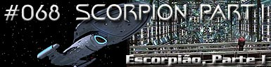
|

| MANCHETE
DO EPISÓDIO Data Estelar: 50984.3. 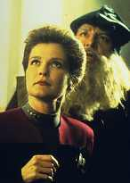 Janeway relaxa no holodeck com um programa simulando a Itália renascentista. Com ela, ninguém menos do que Leonardo Da Vinci, com quem ela espera poder trabalhar em projetos de escultura e pintura. Assim que as coisas começam a ficar interessantes, ela é interrompida por um chamado de Chakotay. O comandante pede que ela venha o mais rápido possível para a Engenharia. Quando a capitã chega, depara-se com a notícia mais aterradora desde que sua nave se perdeu do outro lado da galáxia: tudo indica que a Voyager está se aproximando do temido espaço Borg.Convocando uma reunião de emergência para discutir as decisões a ser tomadas, Janeway e Chakotay informam os oficiais superiores de que não há como contornar o território Borg, dada a sua extensão, mas que talvez haja um modo de atravessá-lo. Sensores de longo alcance detectaram uma estreita passagem livre de atividade da coletividade, apelidada de "passagem Noroeste" e a capitã decidiu abraçar a oportunidade. Ela alerta que os Borgs sabem da presença da Voyager no quadrante Delta, pois encontraram e estudaram uma sonda lançada semanas antes. 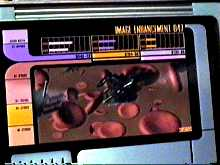 Neelix começa a planejar um modo de aumentar a capacidade dos replicadores e economizar os suprimentos, já que a nave não poderá parar para se reabastecer tão cedo. Harry tenta aumentar a resolução dos sensores para detectar naves Borgs com antecedência, no evento de um confronto. O Doutor estuda a fundo o processo de assimilação. Enfim, toda a tripulação se engaja na melhoria dos sistemas e pode-se quase sentir o cheiro de medo no ar.Mais tarde, na Enfermaria, Kes e o Doutor analisam os restos Borgs encontrados em "Blood Fever". A Ocampa experimenta visões perturbadoras de milhares de cadáveres Borgs despedaçados e empilhados, e da destruição da Voyager. À medida que Tuvok reporta as premonições à capitã, o alerta vermelho é soado e o campo de dobra da nave cai por causa de uma turbulência subespacial. Harry Kim então detecta quinze cubos Borgs seguindo na direção da nave. Quando todos acham que é o fim, os cubos passam reto sem parar, com exceção de um, que reduz a velocidade apenas para fazer uma varredura preliminar da Voyager. 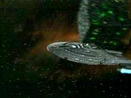 Intrigada pela ação inesperada dos Borgs, Janeway ordena que Harry fique de olho na armada para descobrir o que chamou a atenção deles e, em seguida, a capitã segue para o seu gabinete. Lá, ela estuda todos os registros de encontros de capitães da Frota com os Borgs. Pouco tempo mais tarde, as naves Borgs desaparecem dos sensores. Ainda mais curiosa, ela diz a Paris para alterar curso da nave, seguindo as últimas coordenadas dos cubos. Quando a Voyager chega ao local, a tripulação descobre que aqueles quinze gigantescos cubos foram reduzidos a toneladas de destroços. Tuvok detecta uma assinatura de arma alienígena e todos se dão conta de que existe uma raça ainda mais poderosa do que a coletividade no quadrante Delta.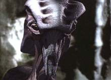 A descoberta provoca sentimentos mistos na capitã. Pode significar o ticket de passagem pelo território Borg, um aliado em potencial, ou o total aniquilamento. Os sensores detectam uma nave impenetrável de origem desconhecida, presa a um dos cubos. Chakotay convoca um grupo avançado, que se transporta para investigar. Depois, um ser não-humanóide aparece e ataca os oficiais, que voltam à Voyager não muito antes de ela ser atacada. Quando a nave escapa, Kes diz à capitã que não é com os Borgs que eles deveriam se preocupar, mas com a raça alienígena, designada pelos Borgs como "Espécie 8472".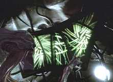 Horas se passam e a tripulação finalmente chega à passagem Noroeste. Mas eles nem têm tempo de se alegrar, pois descobrem da pior forma por que não há Borgs naquela região: a passagem é na verdade um corredor com centenas de naves da Espécie 8472 emergindo de uma fenda inter-dimensional. Kes consegue captar o pensamento dos alienígenas, sentindo um ódio frio vindo deles e a vontade de destruir tudo o que encontrarem pela frente.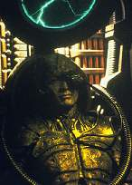 Neste momento, a capitã chama o comandante em particular para eles discutirem juntos as alternativas. Na verdade, Janeway se sente perdida e desamparada, pois agora sabe que não pode colocar a Voyager na rota dos 8472 ou enfrentar os Borgs em seu espaço. Mas, ao mesmo tempo, ela também não está preparada para informar a tripulação de que eles vão desistir de encontrar um caminho para casa. Percebendo o quanto ela está cansada, Chakotay sugere que ela durma para clarear a mente. Mas, em vez disso, ela vai até o holodeck procurando inspiração com Leonardo Da Vinci. O artista a aconselha a apelar a Deus, contudo ela tem uma outra idéia: apelar ao demônio.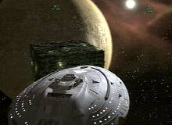 Convocando outra reunião, Janeway avisa os oficiais superiores de que a Voyager fará um acordo temporário com os Borgs, no qual a tripulação oferecerá um meio de derrotar os alienígenas em troca de passagem segura pelo espaço da coletividade. Em meio ao ceticismo dos oficiais e, depois, forte protesto de Chakotay, ela ordena que Paris trace curso para a nave Borg mais próxima. Ao se aproximar de um cubo, a Voyager é presa por um raio trator e Janeway é transportada a bordo da nave inimiga. Ela propõe o acordo, mas, antes de conseguir ouvir uma resposta, dez naves da Espécie 8472 aparecem e destroem um planeta inteiro naquele sistema solar, junto com alguns cubos.
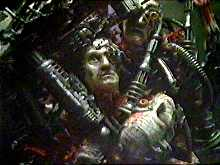 Há quem diga que o episódio foi produzido, pois estava fadado a acontecer desde que se estabeleceu que a Voyager estaria perdida no quadrante Delta, a terra natal da coletividade. Mas de previsível ele não tem nada. Ninguém imaginaria ver, na época de A Nova Geração, adversários ainda mais poderosos do que os Borgs, ou ainda tantos cubos juntos de uma única vez. Só em termos de efeitos visuais, "Scorpion" foi um espetáculo digno de prêmio. A música de Jay Chattaway não poderia ter sido melhor executada. 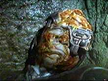 Mas, no contexto da história, talvez nem mesmo o melhor de cada um pode ser suficiente para aliviar a tensão ou preparar a nave eficazmente para o pior. Fica claro que os tripulantes não têm como evitar as ferroadas, a não ser dando a meia-volta e se distanciando ainda mais do quadrante Alfa. Mas Janeway não está pronta para dar tal ordem. 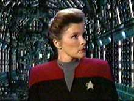 Vale fazer um parênteses sobre o nível da conversa entre Janeway e Chakotay. O relacionamento dos dois é incomum, mas não apenas por se tratar de uma oficial da Frota e um Maquis. Eles estão praticamente em nível de igualdade, até porque a tripulação é mista. Ainda assim, a palavra final é sempre dela, o que não impede que o comandante expresse o seu descontentamento de forma, digamos, enérgica. Esta é uma das qualidades de Voyager que a diferenciam das demais séries de Jornada; em nenhuma outra nave da Frota alguém seria capaz de contradizer o oficial superior. É uma pena que Chakotay permaneça em estado de coma na maioria dos episódios. A cena da discussão foi a melhor entre os dois. 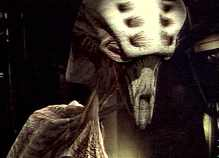 Sobre os novos alienígenas, cujo nome não se sabe, mas que são designados pelos Borgs como "Espécie 8472"; eles não são apenas bonitos e bem feitos. São diferentes, e isso é uma coisa pela qual os fãs pediam há muito tempo. As raças da Série Clássica eram muito parecidas com os humanos. Compreensível, dada a falta de recursos financeiros da produção. Mas em A Nova Geração e Deep Space Nine essa tendência permaneceu. O trekker mais fanático pode usar como desculpa o fato de o quadrante Alfa ser habitado por espécies semelhantes. Mas essa lógica não pode ser válida para o quadrante Delta. Até agora, a Voyager não parecia estar nos confins do universo. Os 8472 não são os "humanóides da semana". São muito mais que isso. São sinal do avanço da tecnologia de CGI e uma mudança drástica - e positiva - na aproximação da franquia às raças alienígenas. 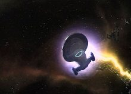 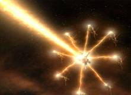 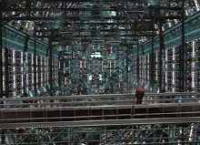 A incoerência aparece quando fica claro o problema de Janeway em tomar a sua decisão, quando ela decide fazer o que for necessário para tirar a Voyager do sufoco - inclusive cogitar a possibilidade de entregar a sensível informação sobre a Espécie 8472 para os Borgs em um tipo de barganha. É impossível não perceber a ironia da situação: no piloto da série ela põe a segurança de alguns milhares de Ocampas acima da de sua própria tripulação e acaba aprisionando sua nave no outro lado da galáxia, enquanto aqui está pronta para assinar a sentença de morte uma raça inteira, ao lado dos Borgs. A questão da incapacidade de a capitã se segurar na hora de agir, levantada por Chakotay, é bastante oportuna e deve-se perguntar o que isso significa, considerando que as ações de Janeway podem influenciar o destino do quadrante inteiro. 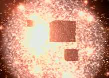
Leonardo da Vinci - "You'll get your
hands covered in goose grease." Chakotay
- "This could be it, Captain. Borg space." Janeway
- "Think good thoughts." Janeway - "Three years ago I didn't even
know your name. Today I can't imagine a day without you." Paris - "Who could do this to
the Borg?" Kes
- "Captain, it's not the Borg that we should be worried about, it's them." Janeway
- "What if I made an appeal... to the devil?" Neelix - "But
the Borg aren't exactly known for their diplomacy." Janeway
- "You are awfully quiet."
Roteiro de
Brannon Braga e Joe Menosky Elenco: Kate
Mulgrew como Kathryn Janeway Elenco
convidado: |